Services / Labels & product lines
Labels that sell from the shelf
A label for one product or a whole line that can grow for years – designed to look good on the shelf, in product photos and in the printer’s hands.
A line that grows every year
One system, a new flavour every year
For Pasieka św. Ambrożego I designed a label system around a diamond: the shape, kraft paper and typography stay, the illustrations change. Each new honey joins the shelf without a redesign. Click a jar to see its label.
Flavoured honeys – my design from scratch
Natural honeys – new labels for an existing line
Miód z truskawką i bazylią
Die-cut label for a 420 g jar · eco kraft paper170 × 60 mm wrap-around label · eco kraft paper
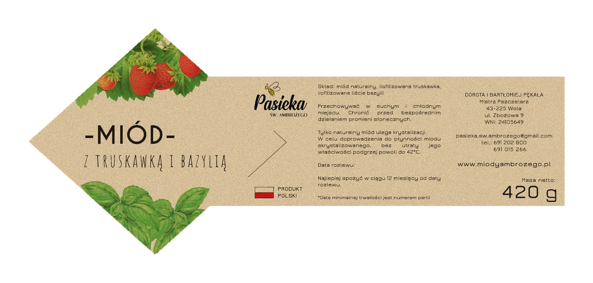
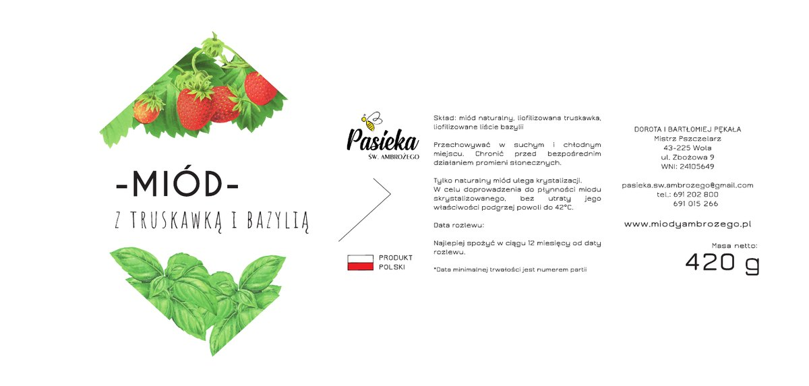
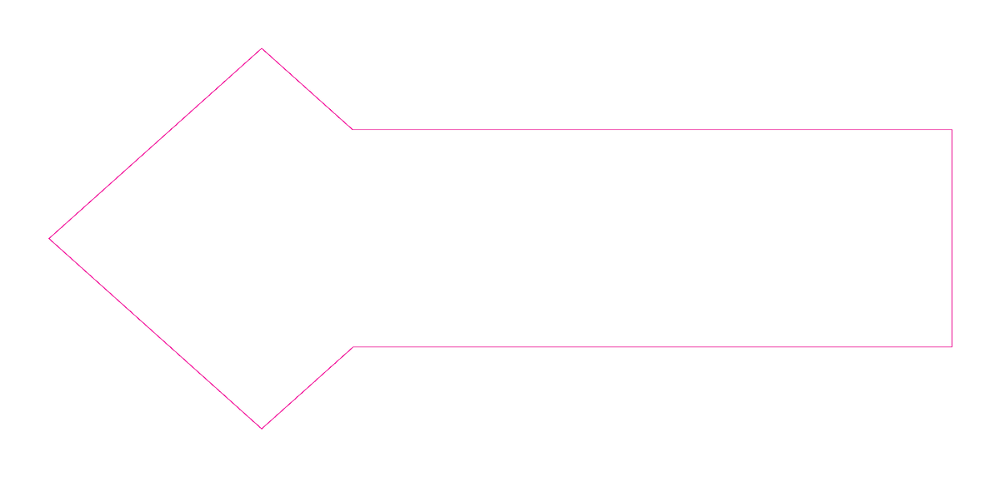
The illustrations run past the cut line on purpose – that is the bleed. When the printer’s knife is a fraction of a millimetre off, there is still no white edge.
One flavour, three formats
Every jar size gets its own file
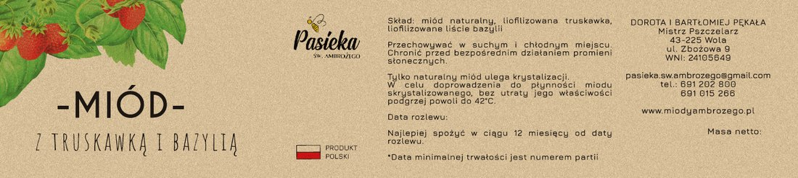
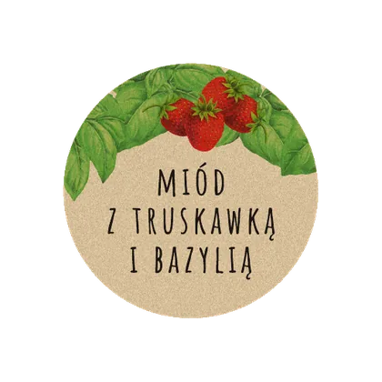
In use
On the shelf and in photos
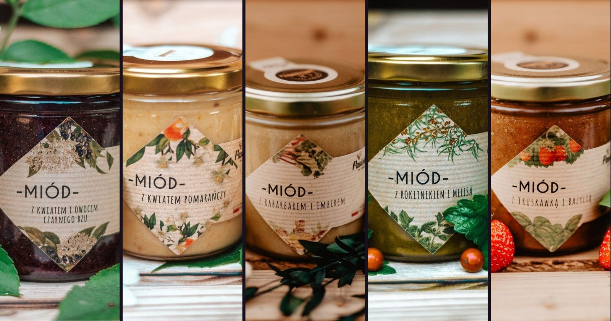
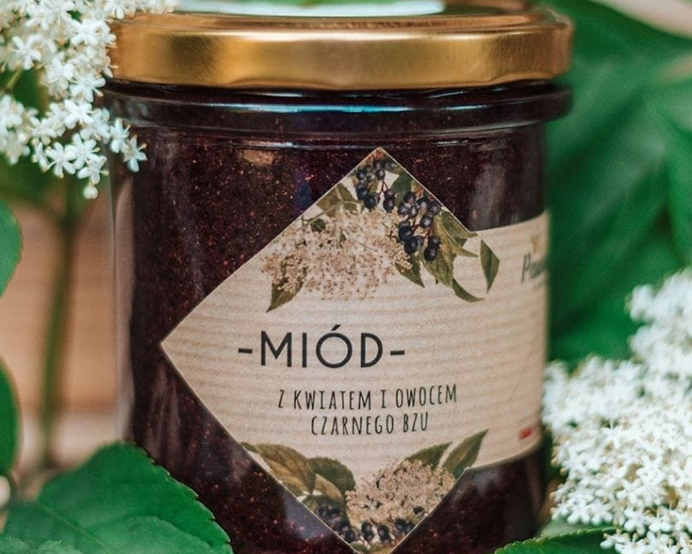

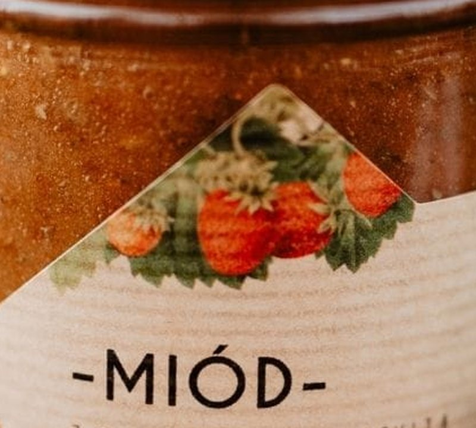

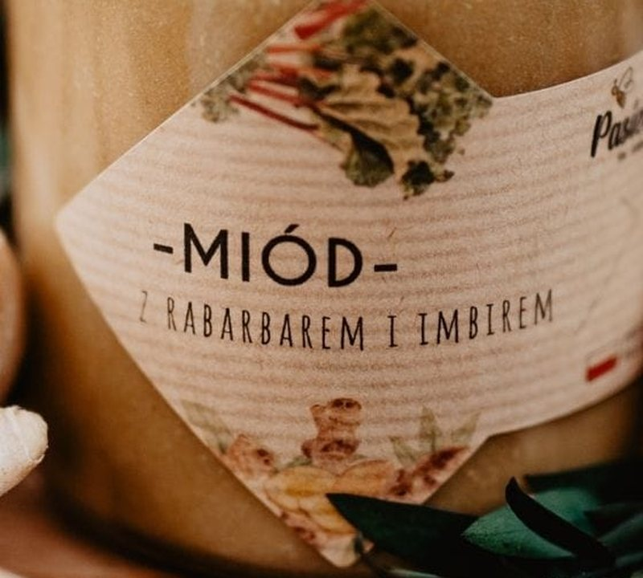
Bedspread labels for Darymex
A refreshed label for a home textiles collection: one layout that works for every product name and colour.
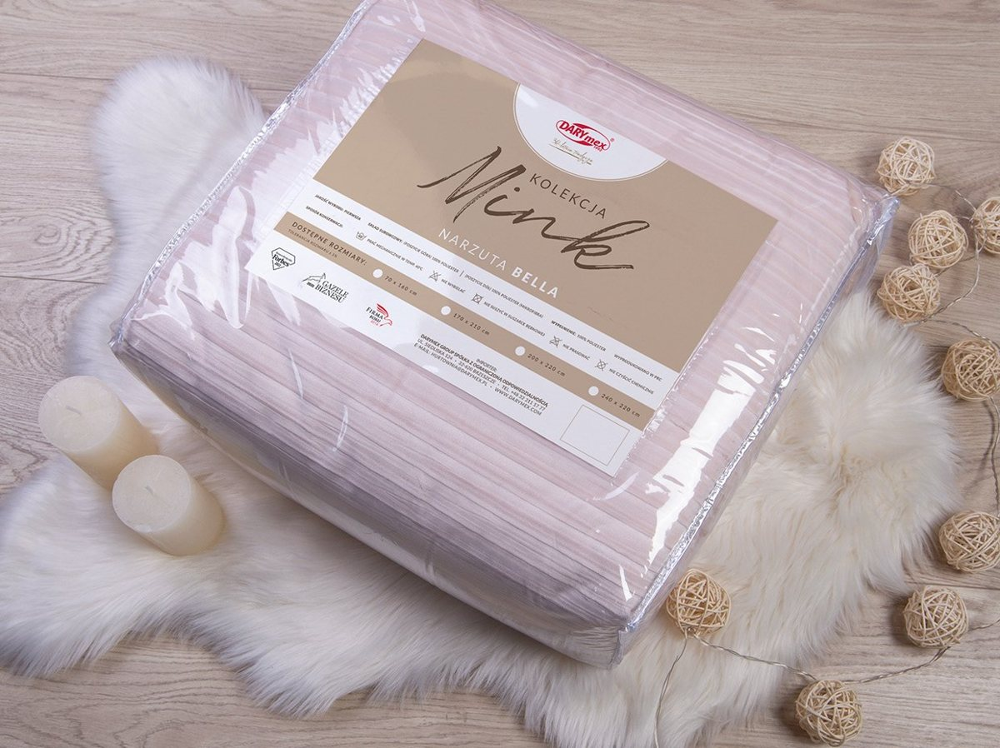
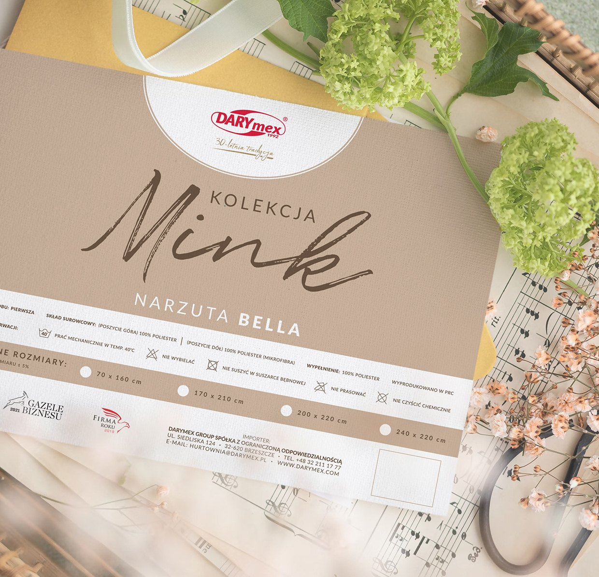
What you get
- A label for one product or a whole product line
- A system that grows: new flavours, sizes or collections without a redesign
- Files for every size – jar, bottle, box, lid
- Print-ready files with bleed and cut line, to the printer’s specification
- Mockups for your shop and social media
Typical timeline X–Y weeks
Ask for a quoteQuestions
Can you design a label to my printer’s die shape?
Yes. Send me the die line or the label size and I will design to it. If you don’t have a printer yet, I will help you choose the format.
What information has to be on a food label?
The content is your responsibility, but I will lay out everything you need – ingredients, net weight, producer, batch and dates – so it is legible and fits.
Can I add a new product to the line later?
That is the point of a system. A new flavour or size uses the same layout, so it is quicker and cheaper than a new design.
Contact
Tell me about your project
A few sentences are enough – whether you are a company or a private person. I usually reply within 1–2 working days.
Thank you! Your message is on its way – I’ll get back to you within 1–2 working days.
Something went wrong. Please write to hello@nataliaborzyk.com.